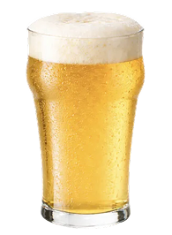
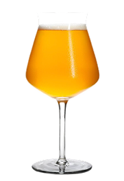
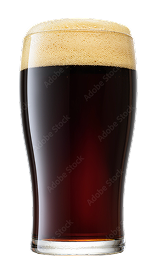

Pilsner
Let, frisk og sprød

Let, frisk og sprød

Humlet og aromatisk

mørk og fyldig
Hvilken øl passer til hvad?
Den friske smag passer godt til lettere mad.
Humlearoma og bitterhed kan spille sammen med krydrede retter.
De ristede smagsnoter passer godt til mørk chokolade.